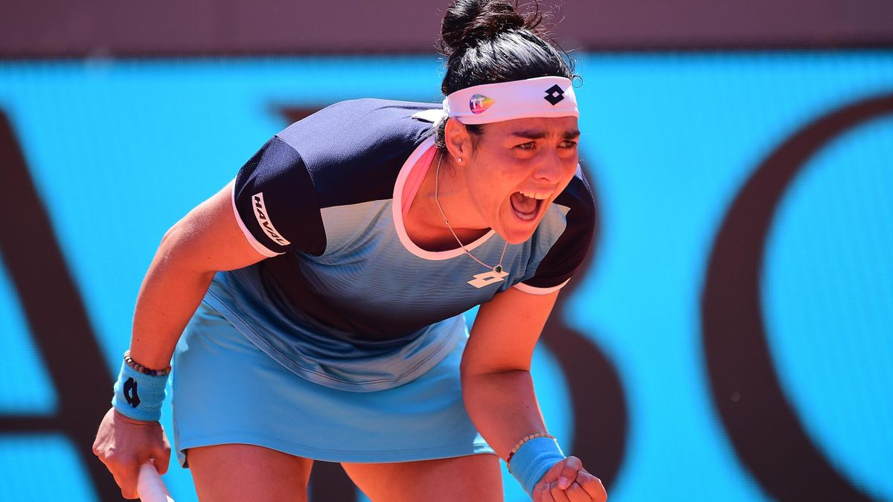

i will show you ons 's jaber interview after her loss
click again here please!!
so that's all i hope u enjoyed it so if you have any question contact me in the first page
going to malak.htmlOns Jabeur (born 28 August 1994) is a Tunisian professional tennis player. She has a career-high ranking by the WTA of world No. 2, achieved on 27 June 2022. Jabeur is the current Tunisian number one, and the highest-ranked African and Arab tennis player in WTA and ATP rankings history.[1] She has won four singles titles on the WTA Tour, as well as eleven singles titles and one doubles title on the ITF Circuit. Jabeur was the runner-up at Wimbledon in 2022 and 2023 and at the US Open in 2022, becoming the first Arab woman to contest a major singles final.[2] Jabeur was introduced to tennis at age three by her mother. She reached two junior major girls' singles finals at the French Open in 2010 and 2011, winning the latter and becoming the first African or Arab to win a junior major since 1964. After nearly a decade of playing primarily at the ITF level, she started competing more regularly on the WTA Tour in 2017. She won the Arab Woman of the Year award in 2019. At the 2020 Australian Open, Jabeur became the first Arab woman to reach a major quarterfinal, a feat she repeated at the 2021 Wimbledon Championships. She also became the first Arab woman to win a WTA Tour title at the 2021 Birmingham Classic.[3] Jabeur won the 2022 Madrid Open, a WTA 1000 event, her biggest title, becoming the first female Tunisian and Arab player to win at this level.[4] Her achievements are credited with raising the profile of tennis across the African continent.[5]
this is a video and a photo for ons 's jaber match in madrid 2022
click me!! i will show you ons 's jaber interview after her loss
click again here please!!
so that's all i hope u enjoyed it so if you have any question contact me in the first page
going to malak.html